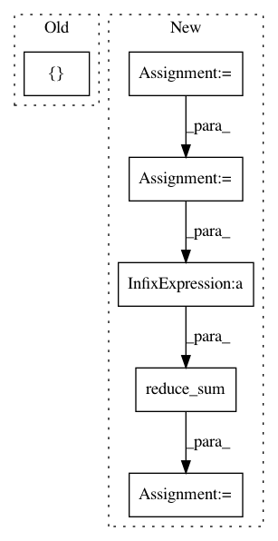

f9b98760f445fc0219cfc9c4cada2b5f9d35ab1b,basic/model.py,Model,_build_loss,#Model#,219
Before Change
if config.wy:
if config.na:
na = tf.reshape(self.na, [-1, 1])
concat_y = tf.concat(1, [na, tf.reshape(self.wy, [-1, M * JX])])
losses = tf.nn.softmax_cross_entropy_with_logits(self.concat_logits, tf.cast(concat_y, "float"))
else:
losses = tf.nn.softmax_cross_entropy_with_logits(
After Change
losses = tf.nn.sigmoid_cross_entropy_with_logits(
tf.reshape(self.logits2, [-1, M, JX]), tf.cast(self.wy, "float")) // [N, M, JX]
num_pos = tf.reduce_sum(tf.cast(self.wy, "float"))
num_neg = tf.reduce_sum(tf.cast(self.x_mask, "float")) - num_pos
damp_ratio = num_pos / num_neg
dampened_losses = losses * (
(tf.cast(self.x_mask, "float") - tf.cast(self.wy, "float")) * damp_ratio + tf.cast(self.wy, "float"))
new_losses = tf.reduce_sum(dampened_losses, [1, 2])
ce_loss = tf.reduce_mean(loss_mask * new_losses)
if config.na:
na = tf.reshape(self.na, [-1, 1])
In pattern: SUPERPATTERN
Frequency: 3
Non-data size: 6
Instances
Project Name: wenwei202/iss-rnns
Commit Name: f9b98760f445fc0219cfc9c4cada2b5f9d35ab1b
Time: 2017-01-24
Author: seominjoon@gmail.com
File Name: basic/model.py
Class Name: Model
Method Name: _build_loss
Project Name: dpressel/mead-baseline
Commit Name: b86c4b10a1ddf9369db260d1a599670e844795b2
Time: 2018-11-02
Author: dpressel@gmail.com
File Name: python/baseline/tf/lm/model.py
Class Name: LanguageModelBase
Method Name: create_loss
Project Name: IndicoDataSolutions/finetune
Commit Name: a1557ab9bb20d3b3d6cda319c0352f879dbb1073
Time: 2019-02-04
Author: benlt@hotmail.co.uk
File Name: finetune/network_modules.py
Class Name:
Method Name: language_model